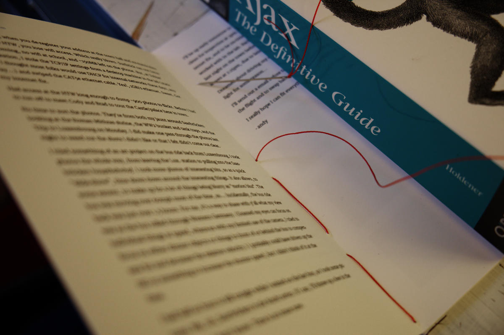
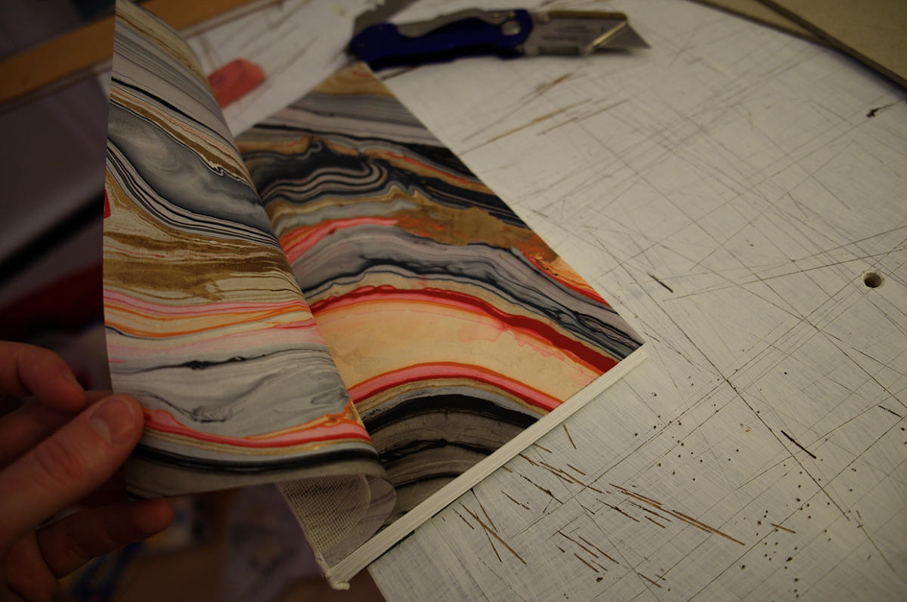
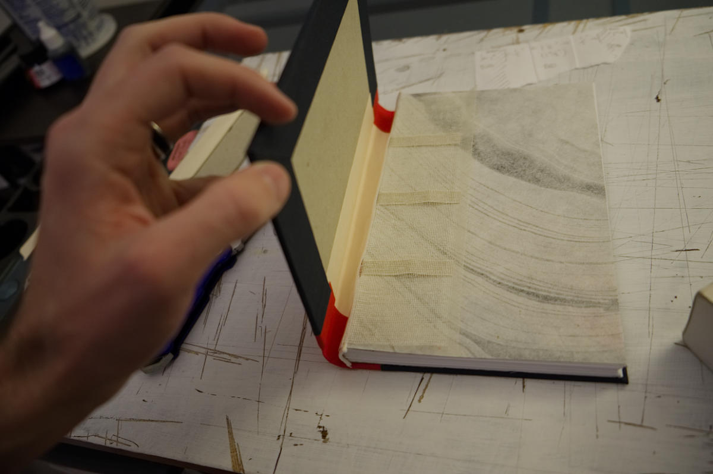

Freitag Abend
A handmade book for my brother's travel journal
My brother Andy went to Germany last summer as part of a research project for the engineering degree he's working on. My brother is a gearhead, talented mechanic, and a fan of stout-style beer; Germany is essentially paradise for him. This three-month trip would be his first experience living abroad, in a place where he didn't know anyone, and where he would be immersed in a language that he didn't speak natively (though he had a few years of German classes under his belt).
In short: there was adventure to be had.
Once he'd caught up with his jetlag and found a few minutes, Andy sent out an email update that described a pretty great week: meeting lots of other students and professors, digging into his research, and lots of excellent-but-inexpensive beer available at picturesque sidewalk cafes. Germany was more than living up to expectations, and Andy started sending similar updates each Friday. He's an excellent writer and his emails were full of funny stories and interesting details. The Freitag Abend ("Friday Evening"), as the subject line always read, became a kind of newsletter with a growing list of followers.
As a Christmas gift, I decided to print and bind all his emails in a hardcover book that he could keep as a momento. Bookbinding is a hobby of mine; I've done half a dozen blank sketchbooks and journals for myself and friends, but this would be the first time I'd worked with typeset pages. It'd been a few years since my last book, though, and I was rusty. I found a few tutorials that were enormously helpful:
- A bookbinding tutorial by Dave the Designer
- A really great series of video tutorials by Sage Reynolds
Layout and formatting

Because the content was fairly simple (running text, photos, a couple levels of subheaders), I decided to handle formatting with Markdown language in my favorite writing app, Ulysses, which has its own CSS-like theming langage, "Ulysses Style Sheets." This combination of tools ended up working well, all in all; it took some trial and error but I was able to set up the basic styling and page layout I needed.
I was actually hoping to lay out the book with regular CSS and a markdown processor like Marked or Pandocs, but unfortunately the CSS print spec isn't quite there for what I needed to do. Ulysses' own formatting language is excellent and makes slightly more difficult stuff like running headers and page numbering relatively simple. The only drawback is the fact that the language is proprietary,1 and, ideally, I'd have preferred an open-source solution.
Pagination
The hardest formatting challenge, as it turned out, was handling imposition, or the way the pages need to be rearranged to read in the correct order in the finished book. This is mathematically complex and very difficult to do by hand. On larger book projects, where I've used Adobe's InDesign, this is a simple matter of checking a box on the PDF export setup. I could have done that here, too, but this time I really wanted to finish an entire book using simple, inexpensive, and ideally code-based tools. I was feeling stubborn and this was the last piece of the puzzle I needed.
After lots of digging I eventually found a little Mac app called BookLightning, for about $10, which worked really well. Just give it a PDF, tell it how many pages you'll have in each signature, and it spits out a new file with the correct page order.
One thing I love about web design is the fact that pretty much anybody can create a website with (basically) nothing more than a computer, an internet connection, and a text editor. In the print world, however, the tools are surprisingly less accessible despite being a much older technology. For this project, I was able to design the whole thing with a little over $100 in software (Ulysses, Book Lightning, and an image editor called Affinity Photo); not bad, but if my layouts were any more complex I'd have needed the much pricier Adobe stuff. Hopefully someday it will be possible to do complex, rich page layouts with (mostly) free, open tools.
Binding

Once I had the pages printed and set up correctly, I got to work folding and sewing signatures. This is a little terrifying when you have actual copy printed on the pages. When I've done blank notebooks, the cost of a mistake is having to cut a new sheet of paper, or about 3 minutes and 30 cents. In this book, I'd have to reprint that leaf, and I'd already burned 2 sets of ink cartridges. But I was roughly as careful/anal with this as I imagine the techs in the engine room of a nuclear submarine are, and it paid off. No ruined pages, no midnight runs for printer ink. Yay.
- 


But the really scary, high-stakes part is cutting the block and attaching the cover. Making a mistake while folding means reprinting a page.2 A mistake while covering means reprinting the book (and also re-sewing and gluing).
On the other hand, this is the point where it finally starts to feel like a finished book, and that makes it exciting. Before I glue the cover on, I like to wrap it around the block and pick it up. The weight of it in my hand, for the first time, is so nice: it feels like a real book.

- 
For this book I carefully followed the instructions in Sage Reynold's Youtube videos and, for the first time, I didn't get ripples in the endpapers from applying too much glue. His hints on getting the covers aligned right was also really helpful.


- 
All in all, I'm really happy with how it turned out. If I did a printed book like this again, I don't think I'd try to print it myself. Instead I think I'd just pay an on-demand/digital printer to handle my folios— their print quality will be better, more archival, and of course they'll be faster. That aside, though, the labor difference between binding a printed book versus a blank one surprised me. The stakes are generally much higher and there's a lot more time needed to make sure that everything is where it should be. I imagine I'll mostly stick to making blank books from now on, just because it's so much simpler.
Bookbinding, in general, is just such a satisfying, enjoyable thing to do; I love the quiet and precision and simplicity of the work. I love how it feels to fold the paper. I love how the bone folder feels in my hand. I love gluing down the cover fabric, then pushing it into the crevices of the spine. And most of all I love holding a book I just finished— pulling the weights off it, picking it up, smelling the paper and fresh glue, hearing the brand new spine crack a little as I open it for the first time.
It's satisfying how a handmade book feels, but I also love how it connects you to a very old tradition— a nice contrast to the web design world where I spend most of my days. That world is an exciting place to be, sure, but it also changes so fast and feels so constantly new that you're all but making it up as you go along. But as I fold pages and glue bindings, I'm doing a thing that people have done for thousands of years, using essentially the same tools and techniques.
The irony of all this, though, is that these days I use less and less paper in my life and have less and less need for notebooks. I do still draw on paper, but that's mostly finishing work these days— final inking— rather than the kind of idea-capturing and doodling I would use sketchbooks for. These days most of my sketches and notes happen on a tablet or phone, simply because it's much easier to keep iterating on a digital draft: it's all but infinitely malleable, reversible, and portable.
Still, I might continue making sketchbooks to carry around anyway, for the sake of getting a chance to bind a new book every now and then, if nothing else. And sometimes there's just nothing like the weight and smell of a good hardcover to inspire.
-
To clarify, the Ulysses Style Sheets (USS) language itself is open-source, but I'm still calling it "proprietary" because it's designed to be used in a closed-source, commercial app. Nothing wrong with that, mind you; it's a brilliant tool and I will happily use Ulysses for as long as they care to make it. The trade-off is that my production work here is ultimately less portable/controllable than work done on tools based on open standards. ↩
-
Alright, this is not technically correct, so let me clarify: you don't actually print a "page," you print a folio, which is the double-sided sheet of paper you fold in half to create four pages. Each "side" of the fold (comprising two pages, front and back) is called a leaf. So, technically what I mean is " making a mistake while folding means reprinting a folio." Why did I say page, anyway, knowing this is wrong? Because page is a word people generally know while folio is not, and I didn't want to digress on all this in the main article. So cheers, fellow nerd, for venturing into the weeds with me here in the footnotes. ↩